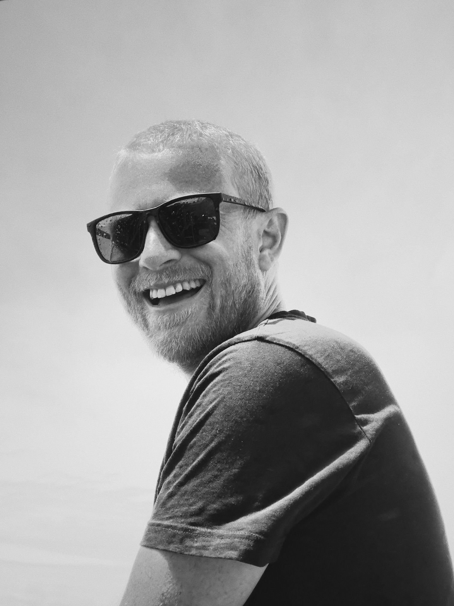
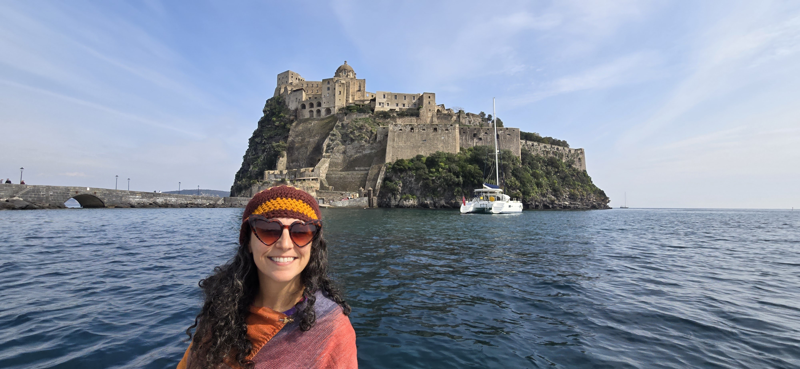

Every vessel needs people who know how to hold a line and when to let one go.
Portfolio is carried by two — Ketil and Hala.

Ketil grew up on a farm in Norway, two hours from Oslo. For him winters meant felling trees, splitting wood by hand and skiing. Summers meant building, repairing, tending and of course sailing. He learned early that things worth having require care and patience.
He has spent his career as an urban planner thinking about public space at the largest scale. Designing how cities breathe. Contemplating how humans and nature find their balance. Forming how communities are shaped by the spaces held between buildings, between people. He dreams of floating cities that offer human life unmoored from fixed ground, finding new ways to gather and belong.
He has sailed since childhood. He co owns a monohull 35 foot Albun Stratus in Oslo that he takes out as often as he can. He's sailed in the Caribbean, the North Sea, the Mediterranean and took Hala out in the North Pacific last summer along the Napali Coast. The sea has always been his truest compass. When the opportunity came to take a year off of work and follow that compass fully, he did not hesitate. A true history lover, he was drawn to the ancient sea of Homer's great stories, the water that held Odysseus, that carried civilizations toward one another across millennia.
This time sailing in these seas was Ketil's dream. He is calm by nature, level headed, quietly abundant. The kind of person who finds the best perspective in any situation and offers it to everyone around him without fanfare. He will happily share all knowledge he has of how to sail with those who want to learn.
He believes in Dugnad, the Norwegian tradition of communal labor, showing up to help build something together simply because you are part of the community.
Portfolio is his Dugnad, offered to the wider world.

Hala is from the United States. First and foremost she has no idea how to sail. She has maintained a resistance to learning knots, but has realized that she has to learn to cook in order to sustain a fair division of labor. If you eat anything she cooks, understand that this is a very unique experience in and of itself. Savor it, for it will not last.
She is a visual artist whose practice lives at the intersection of time, human connection and the dissolution of walls between people. She thinks deeply about what it means to be alive within a flesh vessel. Believing that the most important thing we have to do with our finite time is to connect with other living organisms with the limited senses and time we are allotted. Her mediums span ceramics, glass, performance, documentation, screen printing, fiber, metal and participatory forms. All rooted in a single enduring question: how do we connect more authentically across the distance between us?
Borderlessness is both her artistic theme and her way of moving through the world.
She understands the temporary not as loss but as the very thing that makes a moment matter.
The voyage was Ketil's dream. Portfolio was Hala's acknowledgement.
Ketil and Hala are not curators in the traditional sense. They are stewards, collaborators and fellow travelers.
Mad Scientist, Hawai'i. Came to digitize Portfolio. Took it apart and put it together. Taught Ketil and Hala how to understand the nuanced mechanics of their floating home. Drone shots, website design and learning how to enter and exit countries.